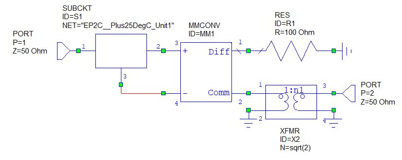
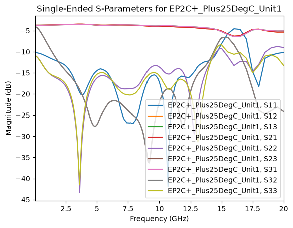
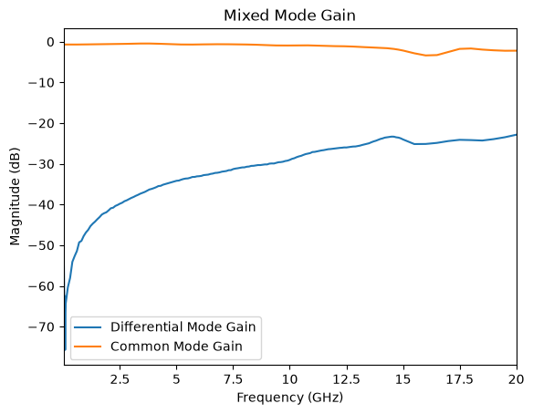
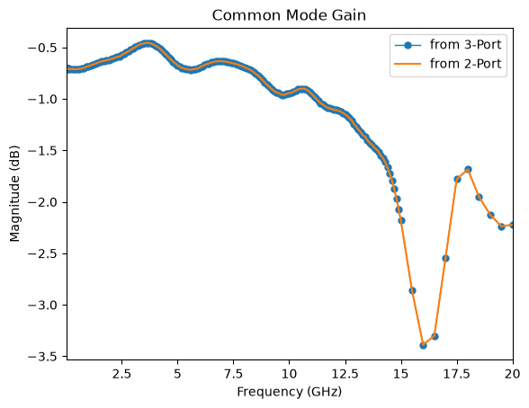

Mixed Mode S-Parameters & Impedance Transformation#
Mini-circuits EP2C+ is a 1.8 to 12.5 GHz MMIC based splitter/combiner. The s-parameters provided by Mini-circuits are single-ended. For this example, the single-ended s-parameters will be converted to mixed mode s-parameters so that the common mode gain (the gain from the common port to the common mode terminated in 25 Ω) can be examined. Additionally, the differential mode gain (the gain from the common port to the differential mode terminated in 100 Ω) can be plotted. It is expected that the differential mode gain should be well below the common mode gain since this is a 0 degree splitter/combiner.
Lastly, since it is desired to use this network in a cascade analysis as a 2-port block in a 50 Ω environment, the differential mode will be terminated in 100 Ω and a 50 Ω port transformed to 25 Ω will be connected to the common mode port:

[1]:
import matplotlib.pyplot as plt
import numpy as np
import skrf
from skrf.network import a2s, connect
filename = r'mixedmodeSandZtransform_files/EP2C+_Plus25DegC_Unit1.S3P'
se_ntwk = skrf.Network(filename)
se_ntwk.frequency.unit = 'GHz'
# plot single-ended s-parameters
fig,ax0 = plt.subplots(1)
se_ntwk.plot_s_db(ax=ax0)
ax0.set_title(f'Single-Ended S-Parameters for {se_ntwk.name}')
# use the same frequency list for all networks
freq = se_ntwk.frequency

[2]:
# convert to mixed-mode s-parameters
mm_ntwk = se_ntwk.copy()
# for a 3-port, the common port has to be the last
mm_ntwk.renumber([0,1,2],[2,1,0])
mm_ntwk.se2gmm(p=1)
# make the differential mode port and common mode ports consistent with the figure above
mm_ntwk.renumber([2,1,0],[0,2,1])
fig,ax1 = plt.subplots(1)
mm_ntwk.plot_s_db(1,0,label='Differential Mode Gain',ax=ax1)
mm_ntwk.plot_s_db(2,0,label='Common Mode Gain',ax=ax1)
ax1.set_title('Mixed Mode Gain')
[2]:
Text(0.5, 1.0, 'Mixed Mode Gain')

[3]:
# create a 25 to 50 ohm transformer
# turns ratio
n = np.sqrt(2)
# ABCD Parameters
a = np.array([[n, 0], [0, 1/n]])[np.newaxis, :, :]
abcd = np.tile(a, [freq.npoints,1,1])
transformer = skrf.Network(name='transformer',frequency=freq)
transformer.s = a2s(abcd, z0=[50, 50])
# connect the transformer to the common mode port
# common mode port impedance transformed from 50 Ω to 25 Ω
mm_ntwk_t = connect(mm_ntwk,2,transformer,1)
[4]:
# create a 100 Ω termination
term = skrf.Network(name='100 ohm termination',z0=100,
s=np.zeros([mm_ntwk.frequency.npoints]),
frequency=mm_ntwk.frequency)
# connect the 100 Ω termination to the differential mode port
mm_ntwk_2port = connect(mm_ntwk_t,1,term,0)
fig,ax2 = plt.subplots(1)
mm_ntwk.plot_s_db(2,0,label='from 3-Port',ax=ax2,marker='o',lw=1,markersize=5)
mm_ntwk_2port.plot_s_db(1,0,label='from 2-Port',ax=ax2)
ax2.set_title('Common Mode Gain');

[5]:
# compare the common mode gain of the impedance transformed 2-port to the mixed-mode untransformed 3-port
complex_diff = np.abs(mm_ntwk_2port.s[:,1,0] - mm_ntwk.s[:,2,0])
# don't give warning for -inf
complex_diff[complex_diff==0] = np.nan
fig,ax3 = plt.subplots(1)
plt.plot(freq.f_scaled,20*np.log10(complex_diff))
ax3.set_title('Complex Difference (dB): 2-port and 3-port')
ax3.set_xlabel('Frequency (GHz)');